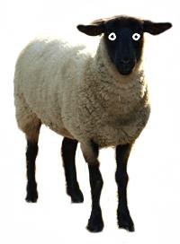

takes your data and draws a tree of a knockout tournament
Fullscreen mode
Open
How
import { createPlayoffs } from 'playoffs'
const options = {
fullscreen: true,
width: '90vw',
height: '90vh'
}
document.querySelector('.your-button').addEventListener('click', () => {
createPlayoffs(yourData, document.body, options)
})
It's recommended to render fullscreen playoffs to the document.body.
Setting width and height options will also make sense. Otherwise playoffs will take the entire viewport.
(Width and height may be provided in any units, not only vw or vh).
rootBgColor is 'transparent' by default so please provide something opaque instead.
Use fullscreenBgColor to change the background color of the margins outside playoffs' "body".
Or you can set fullscreenBgColor alone. In such case you will get the same color across the entire viewport.
Ways to exit fullscreen mode
- click on the cross button
- click anywhere outside the playoffs' "body"
- press Esc
- (programmatically) call uninstall method on a playoffs' instance
"fullscreen" option is not updatable
This option will be ignored when passed to applyNewOptions.
It means that there's no easy way to switch between 'fullscreen' and 'static' mode within one instance of playoffs.
If you need a 'small' playoffs which is expandable to fullscreen, then you need 2 instances, one 'static' and the second one which will be created in response to button click.
Fullscreen functionality is not recommended for mobile devices
That's because it's nearly impossible to make something 'fullscreen' look nice (and reliably) in all mobile browsers.
So consider hiding your open-fullscreen button on mobile devices.